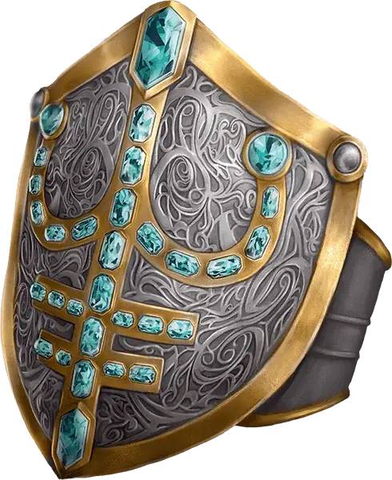

Кольцо защиты
Ring of Protection
Кольцо, редкое (требуется настройка)

Рекомендованная стоимость 501-5 000 зм
Вы получаете бонус +1 к КД и спасброскам, пока носите это кольцо.
Главная / Редакция 2014 / Магические предметы
Ring of Protection
Кольцо, редкое (требуется настройка)

Рекомендованная стоимость 501-5 000 зм
Вы получаете бонус +1 к КД и спасброскам, пока носите это кольцо.
Открыть в справочнике с поиском по разделу, фильтрами и экраном мастера.